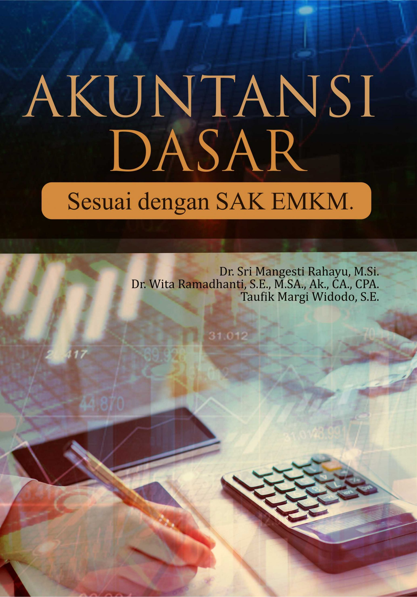

|  | Penulis : Dr. Sri Mangesti Rahayu, M.Si. Dr. Wita Ramadhanti, S.E., M.S.A., Ak., CA., CPA. Taufik Margi Widodo, S.E. |
| Year: 2020 | |
| Pages: 137 | |
| ISBN : 978-623-02-0676-4 | |
Kerangka SAK EMKM terdiri atas tujuan, karakteristik kualitatif, elemen, asumsi, prinsip dan konstrain. Apabila disusun sebagaimana bangunan rumahdapat dipisahkan menjadi 3 lantai. Lantai pertama adalah Tujuan laporan keuanganLantai pertama adalah Tujuan SAK EMKM. Tujuan SAK EMKM ini adalah menyediakan informasi posisi keuangan dan kinerja keuangan suatu entitas yang bermanfaat bagi sejumlah besar pengguna dalam pengambilan keputusan ekonomi oleh siapa pun yang tidak dalam posisi dapat meminta laporan keuangan khusus untuk memenuhi kebutuhan informasi tersebut. Lantai 2 berupa karakteristik laporan keuangan dan elemen laporan keuangan. Karakteristik laporan keuangan terdiri atas relevan, representasi, keterbandingan, keterpahaman. Elemen laporan keuangan SAK EMKM terdiri atas Laporan Posisi Keuangan, Laporan Laba Rugi, serta Catatan Atas Laporan Keuangan. Lantai ketiga terdiri atas asumsi, prinsip dan konstrain. Asumsi berupa akrual, entitas akuntansi, kelangsungan usaha, dan periodisitas. Prinsip terdiri atas penyajian wajar, materialitas, saling hapus, frekuensi pelaporan, informasi komparatif, dan konsistensi penyajian. Konstrainnya berupa biaya dan manfaat.
Buku ini diharapkan dapat menjadi panduan belajar bagi mahasiswa yang mendapatkan mata kuliah Dasar-dasar Akuntansi di kelas, baik mahasiswa Akuntansi, Bisnis, maupun mahasiswa jurusan lain. Buku ini juga diharapkan dapat menjadi panduan praktis bagi praktisi Usaha Kecil dan Menengah. Buku ini terdiri atas 5 bab utama. Pertama, akan menjelaskan tentang apa dan bagaimana akuntansi saat ini serta manfaatnya. Kedua, akan menunjukkan cara perencanaan usaha dan pengelolaan keuangan bagi EMKM buruh migran. Ketiga, akan menyelesaikan siklus akuntansi perusahaan jasa. Kedua, akan membahas siklus lengkap akuntansi perusahaan dagang. Keempat akan menjelaskan siklus akuntansi perusahaan Industri. Kelima, akan menunjukkan cara membuat pelaporan keuangan sesuai dengan Standar Akuntansi Keuangan Entitas Mikro, Kecil, dan Menengah (SAK EMKM).